Promoting Accessibility in Duke Data Visualization:
Creating a Color-Blind Friendly Duke Color Package
Aidan Gildea
Dr. Mine Çetinkaya-Rundel
“Accessible design is good design – it benefits people who don’t have disabilities as well as people who do. Accessibility is all about removing barriers and providing the benefits for everyone.”
Steve Ballmer, former Microsoft CEO (2000-2014)
Introduction
Motivation
Principal goals of thesis:
identify a material issue, and
address it with a tangible solution
Motivation
- Companies can highlight their brand via R packages i.e.
ggtech(Airbnb, Facebook, Google),ggthemes(The Economist, The Wall Street Journal) - Duke has over 17,000 students, 38,000 employees, six campuses and spends more than $1 annually in research expenditures
- No existing R package to represent the Duke brand in data visualization
Motivation
Data visualization industry expected to nearly double by 2026
Important questions to consider:
- Who is our audience?
- How can we make our visualizations more intelligible?
- Who might we be leaving behind?
To reach largest audience, Duke branding package must consider colorblind accessibility
Goal
Empower users to create Duke branded and color-blind friendly visualizations by constructing an R color package.
Background
- Formally known as Color Vision Deficiency (CVD)
- Approximately 300 million color blind people across the globe
- 1 in 12 men (8%) and 1 in 200 women (0.5%) are affected
- Red-green color blindness accounts for approximately 99% of the population with CVD
- 62.5% are deuteronamolous (green-weak vision), 12.5% have protonopia and deuteranopia (cannot distinguish between red and green)
Background
- Duke provides resources on how their color suite meets the Web Content Accessibility Guidelines (WCAG)
- WCAG: globally recognized standard for web accessibility best practices in all fields
- No pathway for users to integrate accessibility information into their visualizations
- The duke package aims to fill this unique branding and accessibility need
Methods
Color Resources
- Duke official color palette
- Intended to bolster the brand of the University and ensure cohesion among all official content
- 2 primary colors
- 18 secondary and tertiary colors
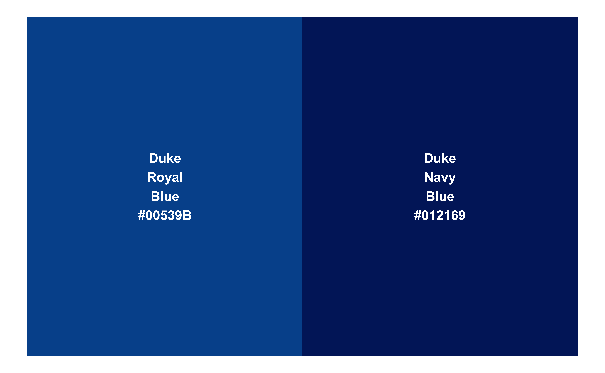
Accessibility Metrics
- Accessibility guide ranks color pairing using following categories:
- AAA: highest compliance, text-background contrast ratio of 7+
- AA: mid-range compliance, text-background contrast ratio of 4.5+
- AA18: mid-range compliance with large text only (18pt or 14pt bold), text-background contrast ratio of 3+
- DNP: does not pass compliance guidelines, text-background contrast ratio of less than 3
Color Difference Metrics
- Metrics using the standard RGB (sRGB) space can be flawed due to its perceptual uniformity
- CIE chromaticity diagram exhibits the color spectrum according to human vision
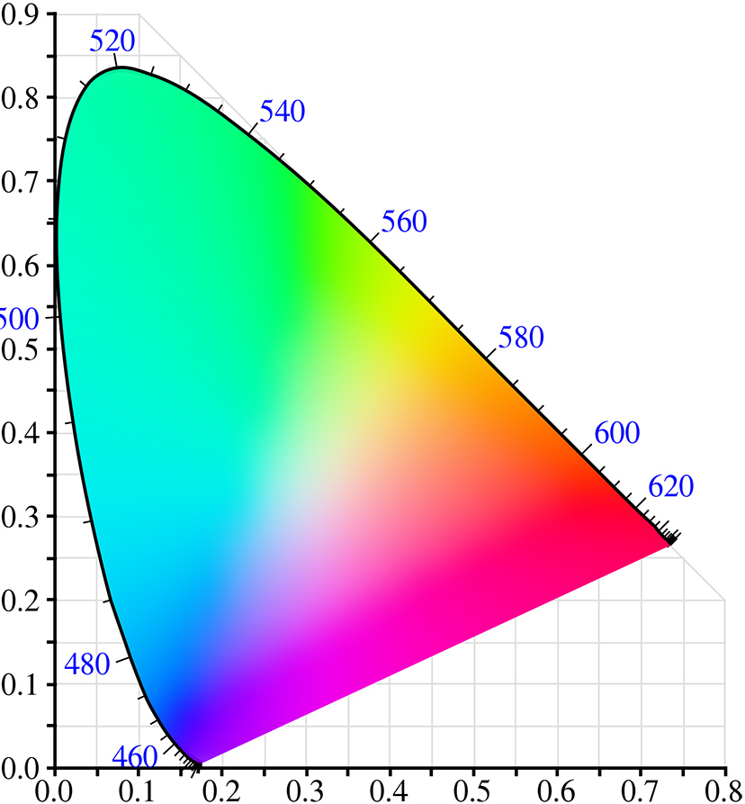{fig-align = “center”}
Color Contrast Ratio
- To account for this irregularity, we use the color contrast ratio: \[CCR = \frac{(L1 + 0.05)} {(L2 + 0.05)}\]
- Ranges from a value of 1 (no contrast) to 21 (highest contrast)
Definition of Optimal Pallette
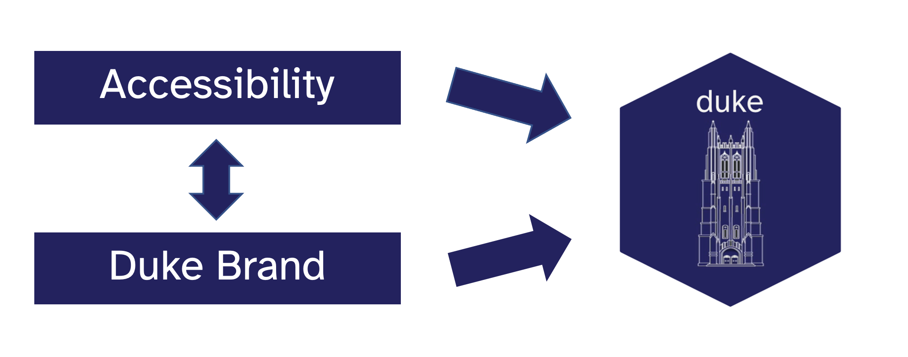Ad-hoc approach in order to strike a balance between accessibility and recognition of the Duke brand.
Package Development Process
theme_duke()
- Sets the aesthetic elements for the visualization’s background and accessory features (background color, grid lines, axis ticks, plot text, etc.)
- Minimalist design with a White background and grid lines removed
- Text in Duke Navy Blue for strong contrast to the White background (CCR of 14.76)
- Relative text sizing for consistent scale
Font specification in theme_duke()
- Font specification is challenging
- Recommend the use of Atkinson Hyperlegible font
- “Focuses on letterform distinction to increase character recognition”
- Optimal solution would default to use of Atkinson Hyperlegible
- Stability across systems and systemfonts issues are prohibitive
theme_duke() in use
scale_duke_continuous()
- Applies a Duke-specific continuous color scale to geometric objects (geom)
- Scale sequences from a dark (Duke Royal Blue) to a light color (Hatteras)
- Duke Royal Blue has a CCR of 7.75, Hatteras has a CCR of 1.25
- Continuous color scales used for overall trend recognition
scale_duke_continuous() in use
scale_duke_color_discrete() and scale_duke_fill_discrete()
- Applies a Duke-specific discrete color scale for the color and fill parameters of ggplot geometric objects
- Discrete plots must be able to delineate effectively between specific groups
| Color 1 | Color 2 | CCR |
|---|---|---|
| White | Cast Iron | 15.13353 |
| Cast Iron | White | 15.13353 |
| White | Duke Navy Blue | 14.75945 |
| Duke Navy Blue | White | 14.75945 |
| Ginger Beer | Cast Iron | 14.10648 |

Figure 3: Heatmap of color contrast ratios of all pairings.
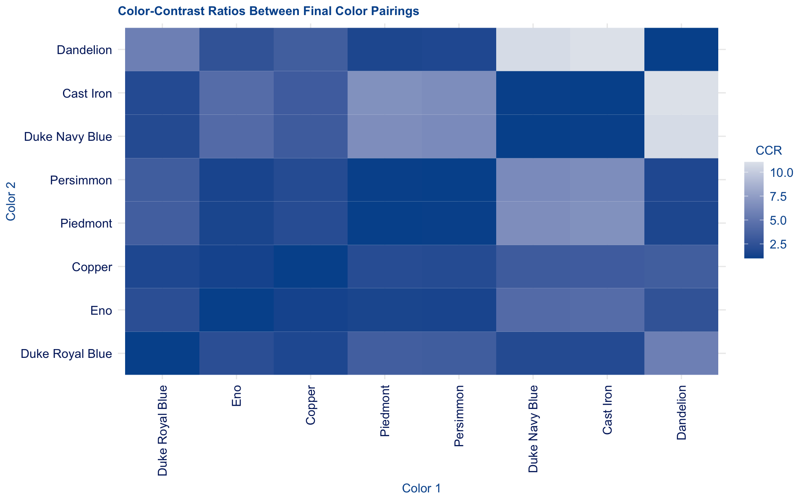
Discrete Palette
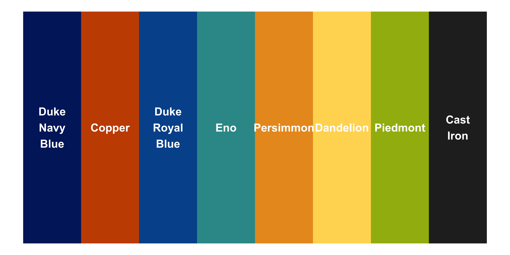Figure 5: Selected discrete palette.
- 14 of 28 color pairings are compliant with WCAG AA18 rating.
- Color used for fill or color of geometric object, which offers complimentary features (ie. shape, larger areas, borders).
- Best practice to use three to five colors from discrete scale [@wilkeb]
scale_duke_color_discrete() in use
scale_duke_fill_discrete() in use
Lessons Learned
1. Package development is an iterative process, take your time.
2. The devtools package is your best friend.
3. Engage with existing resources online and collaborate with others.
Colorblind Accessibility Best Practices
Keep It Simple
- Reduce the complexity of visualization
- What do I need to highlight in the data? What are the primary insights readers should understand?
- Limit the number of variable categories (ideally 3-5)
- Consolidate data groups insignificant to your goal into single category to eliminate the need for excess colors.
De-Emphasize the Need for Color
- “Get it right in black and white” [@muth2020]
- Use labels, arrows, shapes, annotations to differentiate between categories
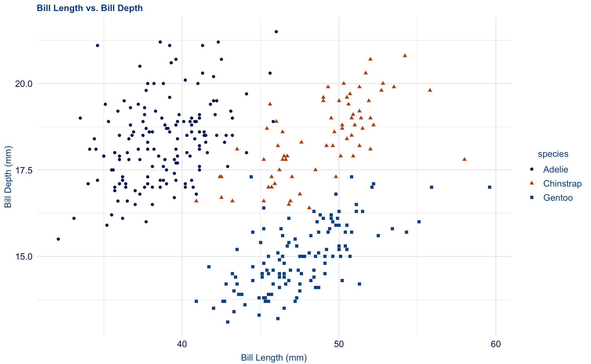
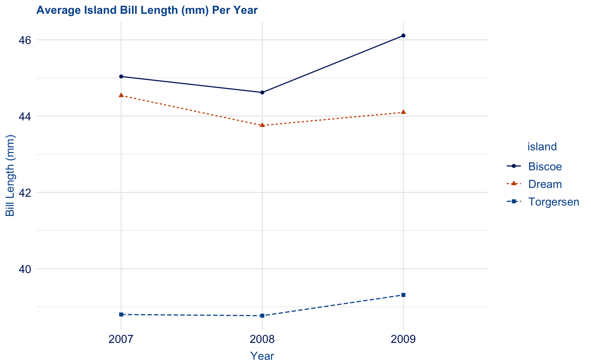
- Scatterplot using shape. b) Line plot using different linetypes.
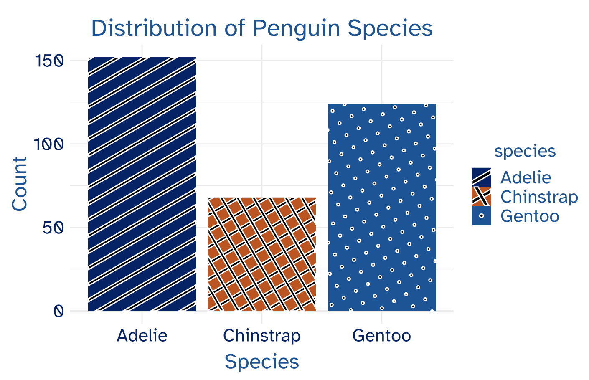
Adjust When Necessary
- Adapt the features of duke to meet audience needs
- Specify larger text for visually impaired and/or older audiences
- Rule of light vs. dark in accessibility (i.e. monochromatic palettes)
Limitations + Future Work
- Duke brand specifies finite suite of colors
- Specification of Atkinson-Hyperlegible font by default
- Ordinal scale, diverging scale
Case Study
Data
- Sourced from the Office of the University Registrar
- Data on all Duke courses between 2013-2022 (10 variables, 63,433 observations)
- Registrar supporting students, faculty and staff in enrollment, academic records, and course scheduling
| Variable | Description |
|---|---|
| acad_year | Academic year of the course. |
| acad_org | Academic organization abbreviation of the course; proxy for department. |
| class_nbr | Unique class number for the course. |
| subject | Subject abbreviation for course. |
| catalog_number | Course number within academic organizations. |
| class_descr | Course name. |
| total_enrollment | Number of students enrolled in course. |
| enrollment_capacity | Enrollment capacity for course. |
| room_capacity | Capacity for students permitted in course room. |
| room_descr | Room where course is held. |
Number of Courses By Department
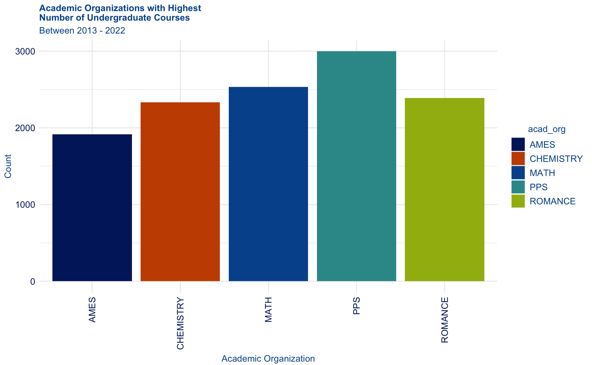
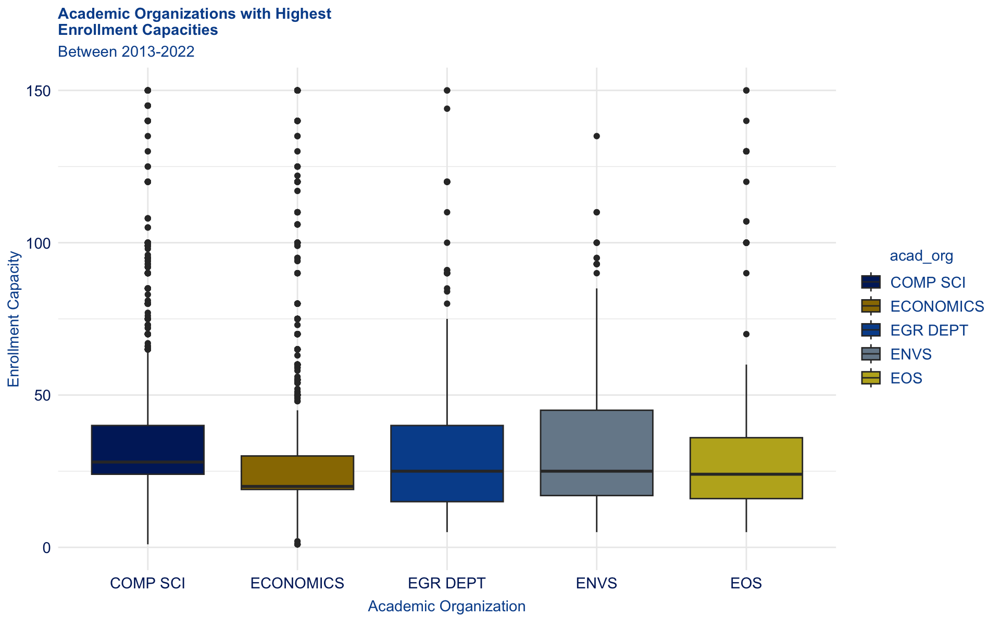
With this information, the Registrar can better make decisions about the distribution of University resources and/or understand potential department popularity.
Average class size
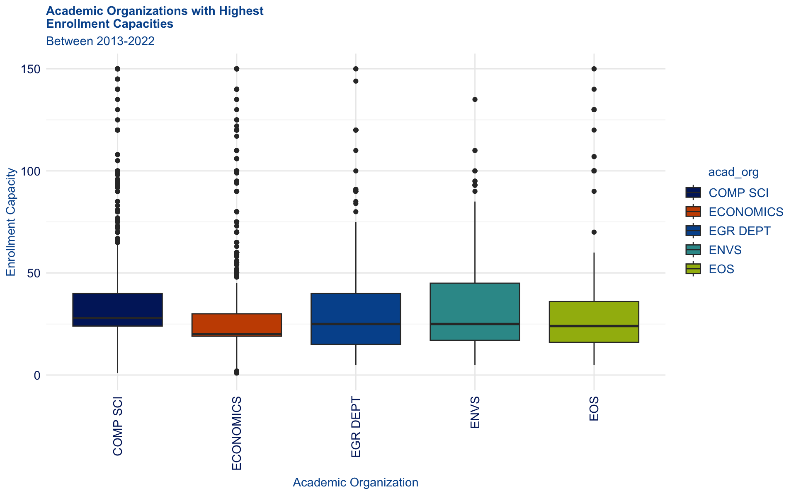
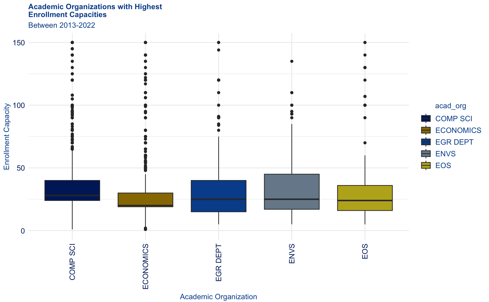
Helpful resource for the Registrar to pinpoint departments that would benefit from reducing class size.
Enrollment in Computer Science courses
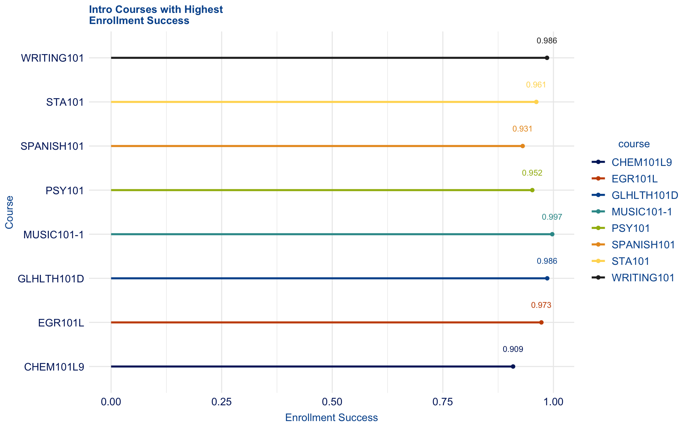
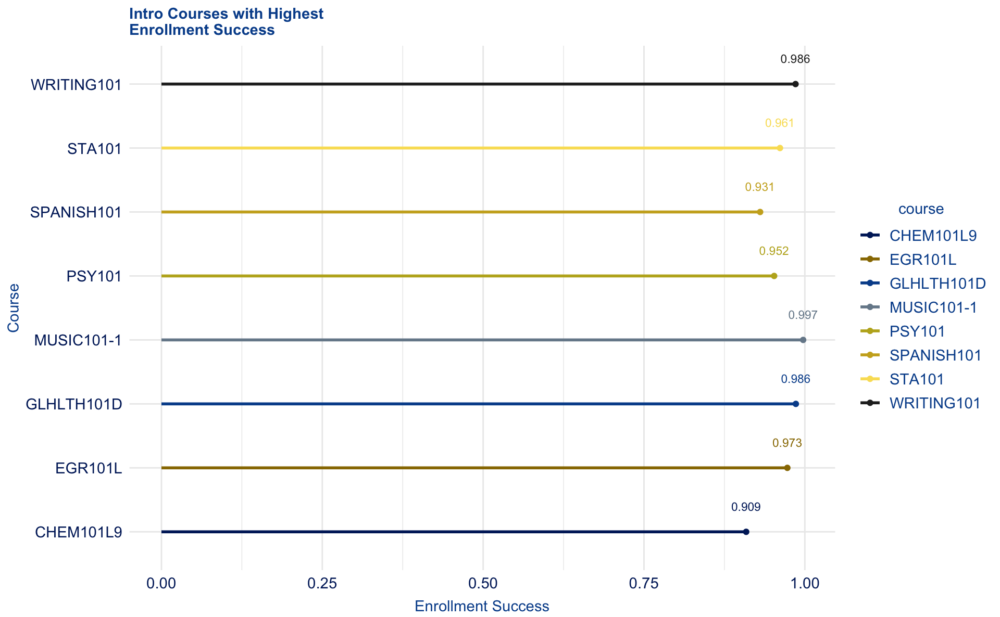
Visualizations suggest that students do not enroll at a high enough rate to fill Computer Science courses.
Enrollment in introductory courses
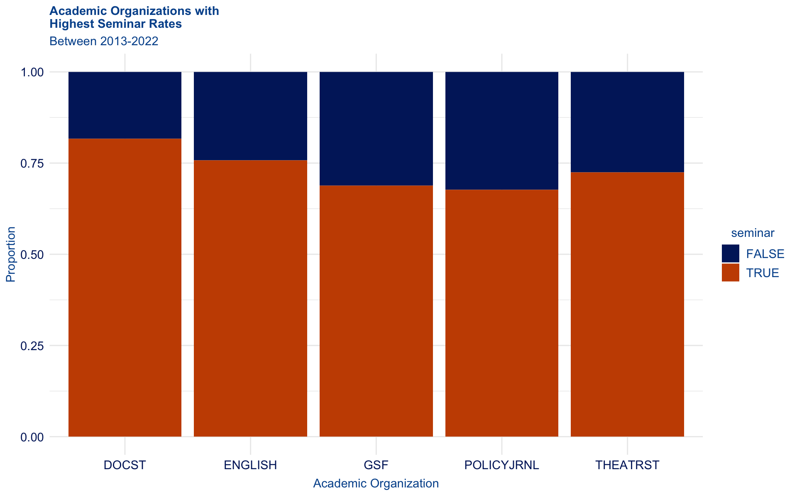
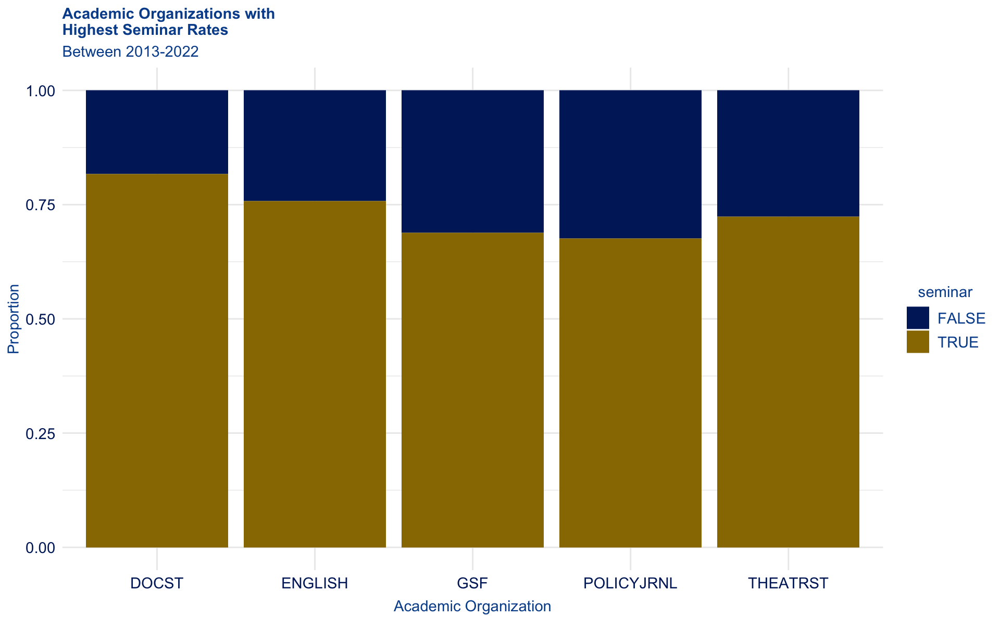
May inform the Registrar’s process of 1) adding sections to these courses and/or 2) identifying reasons for these courses’ success.
Seminar courses
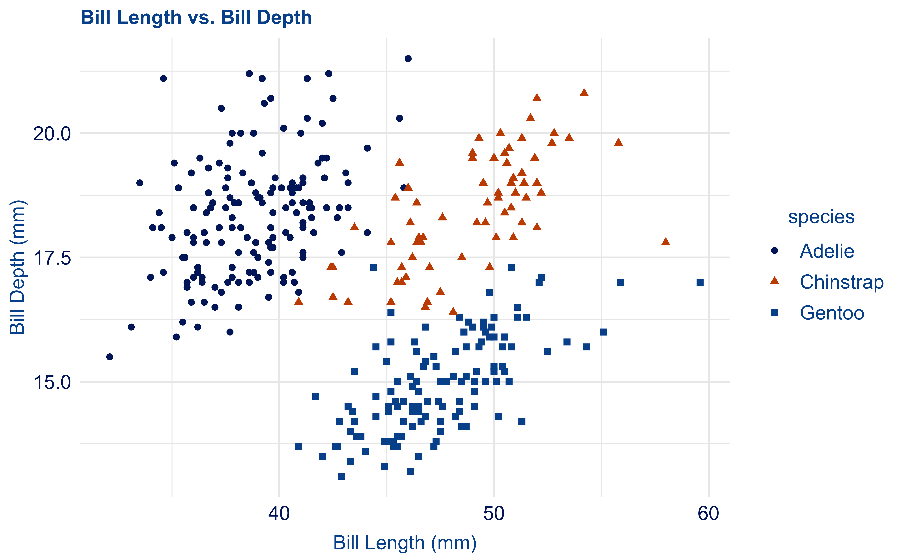
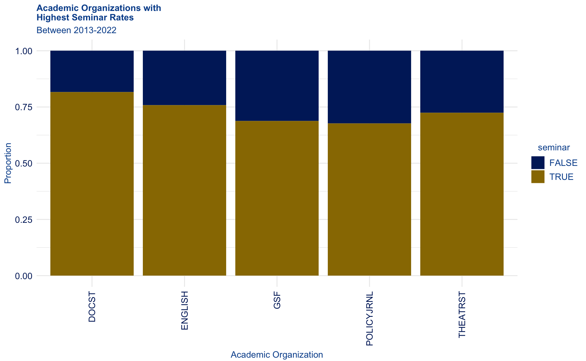
If the University aims to improve their overall seminar offerings, it is important that they identify departments with lowest proportions.
Summary
duke package
- Implements minimalist thematic design
- High contrast color palette in both continuous and discrete geometric objects
- Best used in tandem with other accessibility practices
- Effective tool for promoting accessibility and inclusivity in Duke data visualization